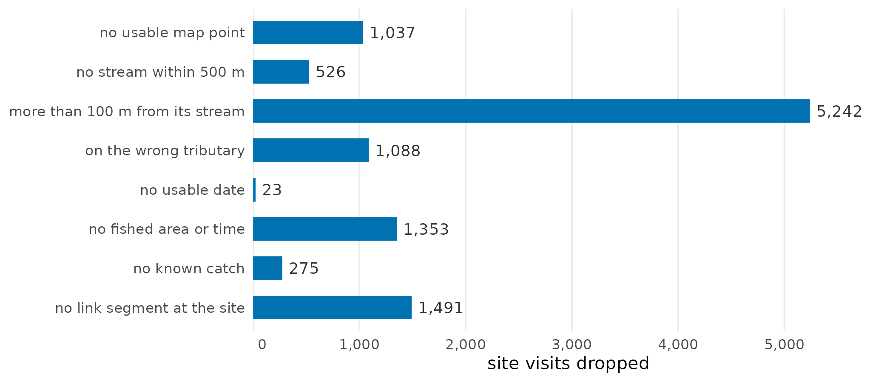

Choosing habitat thresholds from where fish were caught
Source:vignettes/habitat_thresholds.Rmd
habitat_thresholds.RmdThe R package link
maps where each fish species can live in British Columbia’s streams. For
every stretch of stream it asks a few plain questions: is it big enough,
is it too steep, and can fish get to it? Each question has a cut-off.
This article describes how we are testing those cut-offs against
evidence: the places crews have electrofished, and whether they caught
the species there. We try many possible cut-offs and keep the ones that
best tell the two kinds of site apart, then check that they hold on
parts of the province they were not chosen from. The steps run in order,
from the fish records to values link can read.
What is a threshold, and what does “tuned” mean?
A threshold is one of those cut-offs: a minimum stream size or a maximum slope. A rule is the few thresholds a species uses together. A tuned threshold is one chosen by the test this article describes rather than taken from the literature or set by judgment.
For chinook rearing, for example, link’s current rule counts a stream as habitat if it is at least 1.5 m wide, no steeper than 5.5 %. The fish records support a rule where it carries at least 0.75 m³/s, no steeper than 13 %; a smaller stream also counts if it passes the slope test and a river carrying at least 3 m³/s lies within 1 km downstream. We tested between 6,100 and 8,400 candidate rules for each of the 7 species and life stages with enough records. The chinook rearing article works through one of them in full.
What happens, in order?
The 11 steps are each done by one package. Each box links to its package or source; each step links to its section below.
1. The fish records
The Province’s electrofishing records (Province of British Columbia 2022): where crews fished, how much stream they covered, and what they caught. About 52,000 site visits. A survey loaded twice is kept once.
Code and settings
-
Run by: scripts/0230-fdis-load.R;
knw_fdis_quality() - In: FDIS electrofishing export (2020-11-16; 2022-03-22). Out: data/fdis/derived/fdis_sites.csv
- FDIS sentinel value: 9999
- Earliest visit year kept: 1950
- Latest visit year kept: 2022
2. Putting sites on the stream map
Each site’s map point is moved to the nearest stream of the BC
Freshwater Atlas (FLNRORD 2021), held
in a database by fwapg (Norris 2024c). A site is
kept only if that stream is close (within 100 m) and, where the record
names the site’s tributary in a form the Atlas can check, is that
tributary. About 7,900 visits are dropped here, most because the nearest
stream is too far away.
Code and settings
-
Run by: scripts/0230-fdis-load.R;
fwa_indexpoint,knw_fdis_quality() - In: FDIS site points; Freshwater Atlas streams; fwa_streams_20k_50k. Out: placed visits (blue line and measure)
- Snap search radius: 500 m
- Snap distance limit: 100 m
- 1:50k code length the check reads: 45 characters
- 1:50k code digits below the basin that, all zero, mark a code not checked: 42 characters
- Open work: #91
3. link’s stream segments
link (Irvine 2026b) cuts the
Atlas streams into short segments and records, for each species, whether
fish can reach each one and what link’s current rules call habitat. It
also cuts streams where fish have been observed, using
bcfishobs (Norris 2024a), so
those observations shape the segments, but they never score a rule: they
say where fish were seen, not where they were looked for and missed.
Code and settings
-
Run by: link’s province-wide run;
link::lnk_pipeline_run(),fresh::frs_habitat_classify() - In: Freshwater Atlas; link’s default configuration. Out: fresh_default.streams; streams_access; streams_habitat_<species>
4. How much water each stream carries
Flows come from wet (Irvine 2026c). Mostly that is
PCIC’s modelled streamflow (Schnorbus 2018; Craig et al.
2020), carried onto Atlas streams by New Graph’s fork of
fwapg (Norris and Irvine
2026). Where PCIC’s flow does not reach a stream, or carries
under a fifth of wet’s estimate on a stream’s own line, it is wet’s own
water balance, fitted to Water Survey of Canada gauges (Environment
and Climate Change Canada 2021). About 86 % of the kept sites
use PCIC’s flow.
Code and settings
-
Run by: wet’s discharge build;
wet::wet_db_load() - In: PCIC VIC-GL runoff routed by Raven; wet’s water balance. Out: discharge.fwa_v1_segment_monthly
- Routed flow kept unless under this share of the balance’s: 0.2 ratio
5. Joining each site to its segment
Each kept site takes its segment’s flow, width and access, the slope of the Atlas stream line it was placed on, and the distance downstream to rivers of each size. Sites with no usable date, no fished area or time, no known catch, or no segment at their place drop out. About 41,000 sites remain.
Code and settings
-
Run by: scripts/0310-evidence-build.R;
knw_link_place(),knw_fdis_species(),knw_link_flow(),knw_link_width(),knw_link_barrier_dnstr(),knw_link_walks(),knw_bcfishobs_match() - In: placed visits; fresh_default; discharge.fwa_v1_segment_monthly. Out: data/fdis/derived/visits_link.csv; visits_species.csv; walks.csv
- Width model control: least share within 5 %: 0.9 share
- Edge types a parent’s flow is never taken from: 1100, 1150, 1300, 1350, 2300 FWA edge type
- Edge types a dam’s regulated reach never follows: 1100, 1150, 1300, 1350, 2300 FWA edge type
- River sizes walked to: 1, 3, 5, 10, 20, 30, 50 m3/s
- Segment start taken as the visit’s segment within: 5 m
- Largest segment overlap tolerated: 0.01 m
- Wetland area making a line a wetland branch: 1 ha
- Lake area making a line a lake branch: 100 ha
- Dam to segment snap: 500 m
- Degree of regulation that counts a dam without a reservoir: 10 %
- Natural barrier classes downstream: GRADIENT, FALLS, SUBSURFACE_FLOW, USER_DEFINITE
- Edge types a walk never ends on: 1100, 1150, 1300, 1350, 2300, 1400, 1450 FWA edge type
- Most hops a walk takes before it stops: 60 hops
6. Candidate rules
For each species we build thousands of rules around link’s current values: different minimum stream sizes, slope limits, and an allowance for small streams close to a big river.
Code and settings
-
Run by: scripts/0320-tune-run.R;
knw_tune_grid(),knw_rule_in() - In: link’s parameters_habitat_thresholds.csv. Out: candidate rules per species and stage
- MAD floors in the grid: 0.1, 0.15, 0.2, 0.28, 0.35, 0.5, 0.75, 1 m3/s
- Width floors in the grid: 1, 1.5, 2, 3, 4 m
- Gradient maxima in the grid: 0.03, 0.04, 0.0549, 0.07, 0.09, 0.11, 0.13, 0.15, 0.2, 0.25, 0.3 m/m
- Exception river sizes: 1, 3, 5, 10, 20, 30, 50 m3/s
- Exception distances: 100, 250, 500, 1000, 2000, 5000 m
7. Scoring and choosing
Each rule is scored and chosen as described below, where a table gives each species’ choice. The model also accounts for how much stream was fished, which data set the record comes from, its period (1994 or earlier, 1995 to 2004, or later) and its watershed group, so a rule is not credited for those. A short trial run checks the scoring before the full run starts.
Code and settings
-
Run by: scripts/0320-tune-run.R;
knw_tune_smoke(),knw_tune_score(),knw_tune_repick() - In: the evidence; the grid. Out: data/tune/<key>_tune.csv
- Stream edge types scored: 1000, 1100, 2000, 2300 FWA edge type
- Fished area kept: 10, 10000 m2
- Gradient the rules are scored on: fwa_gradient
- Fold seed: 54
- Group folds: 5
- Group intercepts absorbed: fe
- Prior SD on data set and era: 2.5 cloglog
- Region width: 1 SE
- Stricter reading: 1.96 SE
- Exception distance the pick moves off: 200 m
- Smoke gate: tolerance on no rule: 0.25 deviance
- Smoke gate: largest nuisance coefficient: 5 cloglog
- Least groups with both outcomes to fit: 5 groups
- Groups below which a fit is underpowered: 10 groups
- Maturity codes that count as spawner evidence: IM, M, MT, SP, ST
- Length counted as a large spawner: 350 mm
- Flow source the rules read: pick
- Walk targets on a lake or regulated river excluded: FALSE
- Era breaks of the nuisance term: 1994, 2004
- Open work: #92
8. Checking the choice is not luck
Many rules score almost alike, so the winner could come down to chance. We choose again three ways: with the groups split 4 other ways; leaving out one part of the groups, choosing on the rest and scoring the choice on the part left out, for each part in turn; and on 200 random redraws of the groups. For chinook rearing the exact rule came back on 0 of the 4 other splits and in 6 % of the redraws, but it stayed a close call on all 4, and choosing this way scored better than link’s rule on the parts left out (1,183 against 1,345; lower is better).
Code and settings
-
Run by: scripts/0320-tune-run.R;
knw_tune_score() - In: the evidence; the grid. Out: data/tune/<key>_seeds.csv; <key>_honest.csv; <key>_summary.csv
- Extra fold seeds: 55, 56, 57, 58
- Group bootstrap resamples: 200
- Bootstrap seed: 541
9. A curve and a grade
We fit a smooth curve of how often the species is caught against stream size, distance to the river and slope, and use it to grade every segment from low to high expected use. A species whose curve predicts no better than no rule at all gets no grade.
Code and settings
-
Run by: scripts/0320-tune-run.R;
knw_tune_curve(),knw_grade_species(),knw_grade() - In: the evidence; link’s segments. Out: data/tune/<key>_curves.csv; <key>_grades.csv
- Walk cap read by the curve: 50000 m
- River size walked to where the pick has no exception: 10 m3/s
- Smooth basis sizes (size, distance, gradient): 6, 6, 6
- Grade reference quantile: 0.95 quantile
- Grade class breaks: 0, 0.2, 0.4, 0.6, 0.8, 1
- Gradient ceiling the curve and grade read: 0.2 m/m
- Offset before the log of distance: 10 m
- Gradient the grade reads on link’s segments: gradient
- Flow the grade reads on link’s segments under a MAD rule: mad_pick
- Width the grade reads on link’s segments under a width rule: channel_width
10. Running the rule on link’s streams
link’s current rule and the chosen rule both go through the steps
link itself uses, run by fresh (Irvine 2026a): the
rule’s test, link’s hand-entered habitat, and dropping rearing that has
no spawning nearby. On the Bulkley, those last two steps removed 999 of
the 7,699 segments link’s rule passed, so we compare whole runs, not the
test alone.
Code and settings
-
Run by: scripts/0330-compare.R;
knw_compare_rules(),fresh::frs_habitat_predicates(),fresh::frs_habitat_overlay() - In: fresh_default; link’s default configuration. Out: data/compare/
- Comparison check: least fished area: 10 m2
- Comparison check: largest fished area: 10000 m2
- Connectivity bridge distance: 10000 m
- Connectivity bridge gradient: 0.05 m/m
- Comparison bootstrap resamples: 200
- Comparison check: edge types of the FDIS visits it counts: 1000, 1050, 1100, 1150, 2000, 2100, 2300, 1250, 1350 FWA edge type
- Wetland structure reported as tuned: door
- Comparison bootstrap seed: 542
- discharge_source in link’s default bundle: unset
11. Publishing
The chosen values are written under link’s own parameter names, with the grades, so link can read them.
Code and settings
-
Run by: scripts/0325-publish.R;
knw_thresholds_table(),knw_publish() - In: data/tune; data/compare. Out: data/thresholds.csv; data/thresholds_groups.csv; habitat_grade/v1
How is a site placed?
A site’s point goes to the nearest Atlas stream within 500 m, and the site is kept only if that stream is within 100 m. The other streams in reach are not weighed.
| site visit | fate | Atlas stream | name | distance (m) | snapped to |
|---|---|---|---|---|---|
| 103957_16_1 | kept | 360471389 | (unnamed) | 11.9 | yes |
| 103957_16_1 | kept | 360443578 | (unnamed) | 285.9 | |
| 103957_16_1 | kept | 360430079 | (unnamed) | 395.6 | |
| 103957_16_1 | kept | 360762625 | (unnamed) | 433.6 | |
| 103957_16_1 | kept | 360766426 | (unnamed) | 487.5 | |
| 103962_6_1 | dropped | 360559120 | (unnamed) | 239.7 | yes |
| 103962_6_1 | dropped | 360717148 | (unnamed) | 348.3 | |
| 103962_6_1 | dropped | 360784252 | (unnamed) | 356.7 |
How are two rules told apart?
Each rule gets a score: how well “habitat or not” predicts where the species was caught, at sites in watershed groups that were left out while the model was fitted. Lower is better.
Scores move with the sites we happen to have. The standard error (SE) of the difference between two rules’ scores says how far that difference would move with a different set of watershed groups. Rules whose scores are within 1 SE of the best are close calls: the records cannot rank them. From the close calls we take the one that changes link’s current rule least.
One SE is a rule of thumb, fixed before the run. 1.96 SE is the stricter reading, about the width of a 95 % interval: more rules become close calls, and the choice can stay nearer link’s rule. Both are reported.
| species and stage | link’s rule | close calls at 1 SE | chosen at 1 SE | close calls at 1.96 SE | chosen at 1.96 SE |
|---|---|---|---|---|---|
| bull trout rearing | is at least 1.5 m wide, no steeper than 10.5 % | 316 | carries at least 0.35 m³/s, no steeper than 25 % | 3,312 | carries at least 0.35 m³/s, no steeper than 10.5 % |
| bull trout spawning | is at least 2 m wide, no steeper than 5.5 % | 333 | is at least 2 m wide, no steeper than 13 % | 5,774 | is at least 2 m wide, no steeper than 5.5 % |
| chinook rearing | is at least 1.5 m wide, no steeper than 5.5 % | 84 | carries at least 0.75 m³/s, no steeper than 13 %; a smaller stream also counts if it passes the slope test and a river carrying at least 3 m³/s lies within 1 km downstream | 2,102 | carries at least 1 m³/s, no steeper than 5.5 %; a smaller stream also counts if it passes the slope test and a river carrying at least 3 m³/s lies within 1 km downstream |
| coho rearing | is at least 1.5 m wide, no steeper than 5.5 % | 89 | carries at least 0.03 m³/s, no steeper than 4 % | 1,511 | is at least 1.5 m wide, no steeper than 4 % |
| grayling rearing | is at least 1.5 m wide, no steeper than 3.5 % | 1,231 | is at least 1.5 m wide, no steeper than 3.5 % | 7,337 | is at least 1.5 m wide, no steeper than 3.5 % |
| rainbow trout rearing | is at least 1.5 m wide, no steeper than 8.5 % | 14 | is at least 3 m wide, no steeper than 30 % | 463 | is at least 3 m wide, no steeper than 30 % |
| steelhead rearing | is at least 1.5 m wide, no steeper than 8.5 % | 1,034 | carries at least 1 m³/s, no steeper than 8.5 % | 6,434 | is at least 1.5 m wide, no steeper than 8.5 % |
Where are fish sampling records lost?
Most of the records lost are lost when sites are put on the map (72 % of the 11,000 dropped). A site far from any stream, or on the wrong tributary, cannot be trusted to sit on the stream that was fished.

Site visits each step drops, in the order the steps run.
Each species then keeps the sites its rules can speak to: on a stream line (not in a river polygon, a wetland of 1 ha or more or a lake of 100 ha or more), of a usual fished area, where link expects the species, with no code that could hide it and no natural barrier to it downstream. The score uses the groups where the species was caught at some sites and not others.
| species | kept | stream line | fished area | where expected | not hidden | no barrier | scored | groups scored |
|---|---|---|---|---|---|---|---|---|
| bull trout | 40,552 | 29,663 | 27,598 | 22,892 | 22,615 | 11,015 | 8,717 | 75 |
| chinook | 40,552 | 29,663 | 27,598 | 16,403 | 16,292 | 7,123 | 4,490 | 43 |
| coho | 40,552 | 29,663 | 27,598 | 12,960 | 12,898 | 5,442 | 4,263 | 62 |
| grayling | 40,552 | 29,663 | 27,598 | 5,356 | 5,333 | 1,472 | 1,230 | 26 |
| rainbow trout | 40,552 | 29,663 | 27,598 | 27,349 | 27,100 | 13,578 | 12,959 | 129 |
| steelhead | 40,552 | 29,663 | 27,598 | 9,789 | 9,462 | 4,798 | 1,375 | 11 |
Which numbers shape the result, and which have been tested?
Every number below shapes a result. Each was checked against the code and the run when this article’s data were written. Source says where the value came from: a published source, a convention set here, a value inherited from link or bcfishpass (Norris 2024b), or a value measured from data. Tested says whether the result has been compared with another value. The untested rows come first: they are the work still to do.
Of the 67 settings, 7 have been tested and 10 of the untested ones were inherited.
All 67 settings
| setting | value | unit | step | source | tested | issue |
|---|---|---|---|---|---|---|
| Snap search radius | 500 | m | 2 | inherited | no | #91 |
| Snap distance limit | 100 | m | 2 | inherited | no | #91 |
| Wetland area making a line a wetland branch | 1 | ha | 5 | inherited | no | |
| Lake area making a line a lake branch | 100 | ha | 5 | inherited | no | |
| Natural barrier classes downstream | GRADIENT, FALLS, SUBSURFACE_FLOW, USER_DEFINITE | 5 | inherited | no | ||
| Gradient the rules are scored on | fwa_gradient | 7 | inherited | no | #92 | |
| Gradient the grade reads on link’s segments | gradient | 9 | inherited | no | #92 | |
| Connectivity bridge distance | 10000 | m | 10 | inherited | no | |
| Connectivity bridge gradient | 0.05 | m/m | 10 | inherited | no | |
| discharge_source in link’s default bundle | unset | 10 | inherited | no | #89 | |
| FDIS sentinel value | 9999 | 1 | measured | no | ||
| Earliest visit year kept | 1950 | 1 | convention | no | ||
| Latest visit year kept | 2022 | 1 | convention | no | ||
| 1:50k code length the check reads | 45 | characters | 2 | source | no | #91 |
| 1:50k code digits below the basin that, all zero, mark a code not checked | 42 | characters | 2 | source | no | #91 |
| Routed flow kept unless under this share of the balance’s | 0.2 | ratio | 4 | convention | no | |
| Width model control: least share within 5 % | 0.9 | share | 5 | measured | no | |
| Edge types a parent’s flow is never taken from | 1100, 1150, 1300, 1350, 2300 | FWA edge type | 5 | convention | no | |
| Edge types a dam’s regulated reach never follows | 1100, 1150, 1300, 1350, 2300 | FWA edge type | 5 | convention | no | |
| River sizes walked to | 1, 3, 5, 10, 20, 30, 50 | m3/s | 5 | convention | no | |
| Segment start taken as the visit’s segment within | 5 | m | 5 | convention | no | #92 |
| Largest segment overlap tolerated | 0.01 | m | 5 | measured | no | |
| Dam to segment snap | 500 | m | 5 | convention | no | |
| Degree of regulation that counts a dam without a reservoir | 10 | % | 5 | convention | no | |
| Edge types a walk never ends on | 1100, 1150, 1300, 1350, 2300, 1400, 1450 | FWA edge type | 5 | convention | no | #73 |
| Most hops a walk takes before it stops | 60 | hops | 5 | convention | no | |
| MAD floors in the grid | 0.1, 0.15, 0.2, 0.28, 0.35, 0.5, 0.75, 1 | m3/s | 6 | convention | no | |
| Width floors in the grid | 1, 1.5, 2, 3, 4 | m | 6 | convention | no | |
| Exception river sizes | 1, 3, 5, 10, 20, 30, 50 | m3/s | 6 | convention | no | |
| Exception distances | 100, 250, 500, 1000, 2000, 5000 | m | 6 | convention | no | |
| Stream edge types scored | 1000, 1100, 2000, 2300 | FWA edge type | 7 | convention | no | |
| Fished area kept | 10, 10000 | m2 | 7 | convention | no | |
| Group folds | 5 | 7 | convention | no | ||
| Exception distance the pick moves off | 200 | m | 7 | convention | no | |
| Smoke gate: tolerance on no rule | 0.25 | deviance | 7 | convention | no | #84 |
| Smoke gate: largest nuisance coefficient | 5 | cloglog | 7 | convention | no | #84 |
| Least groups with both outcomes to fit | 5 | groups | 7 | convention | no | |
| Groups below which a fit is underpowered | 10 | groups | 7 | convention | no | |
| Maturity codes that count as spawner evidence | IM, M, MT, SP, ST | 7 | source | no | ||
| Length counted as a large spawner | 350 | mm | 7 | convention | no | |
| Flow source the rules read | pick | 7 | convention | no | #89 | |
| Walk targets on a lake or regulated river excluded | FALSE | 7 | convention | no | ||
| Era breaks of the nuisance term | 1994, 2004 | 7 | convention | no | ||
| Extra fold seeds | 55, 56, 57, 58 | 8 | convention | no | ||
| Group bootstrap resamples | 200 | 8 | convention | no | ||
| Bootstrap seed | 541 | 8 | convention | no | ||
| Walk cap read by the curve | 50000 | m | 9 | convention | no | |
| River size walked to where the pick has no exception | 10 | m3/s | 9 | convention | no | |
| Smooth basis sizes (size, distance, gradient) | 6, 6, 6 | 9 | convention | no | ||
| Grade reference quantile | 0.95 | quantile | 9 | convention | no | |
| Grade class breaks | 0, 0.2, 0.4, 0.6, 0.8, 1 | 9 | convention | no | ||
| Gradient ceiling the curve and grade read | 0.2 | m/m | 9 | convention | no | |
| Offset before the log of distance | 10 | m | 9 | convention | no | |
| Flow the grade reads on link’s segments under a MAD rule | mad_pick | 9 | convention | no | ||
| Width the grade reads on link’s segments under a width rule | channel_width | 9 | convention | no | ||
| Comparison check: least fished area | 10 | m2 | 10 | convention | no | |
| Comparison check: largest fished area | 10000 | m2 | 10 | convention | no | |
| Comparison bootstrap resamples | 200 | 10 | convention | no | ||
| Comparison check: edge types of the FDIS visits it counts | 1000, 1050, 1100, 1150, 2000, 2100, 2300, 1250, 1350 | FWA edge type | 10 | convention | no | |
| Comparison bootstrap seed | 542 | 10 | convention | no | ||
| Gradient maxima in the grid | 0.03, 0.04, 0.0549, 0.07, 0.09, 0.11, 0.13, 0.15, 0.2, 0.25, 0.3 | m/m | 6 | convention | yes | #67 |
| Fold seed | 54 | 7 | convention | yes | ||
| Group intercepts absorbed | fe | 7 | convention | yes | #83 | |
| Prior SD on data set and era | 2.5 | cloglog | 7 | convention | yes | #84 |
| Region width | 1 | SE | 7 | convention | yes | #79 |
| Stricter reading | 1.96 | SE | 7 | convention | yes | #79 |
| Wetland structure reported as tuned | door | 10 | convention | yes |
Software and citation
The steps run on the PostgreSQL tools fwapg and New
Graph’s fork
of it, and on the R packages link
(segments, access and habitat), wet
(flows), fresh
(the habitat tests) and knowledge
(the evidence and the tuning). This article’s data were written on
2026-10-27 at commit deb8bf5. To cite this package:
Irvine A (2026). knowledge: Fisheries Evidence and Tuned Habitat Thresholds for BC Watershed Groups. New Graph Environment Ltd. Version 0.4.13, https://newgraphenvironment.github.io/knowledge/.